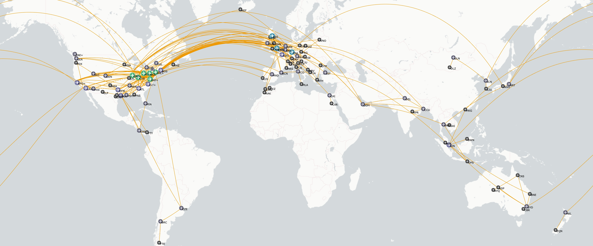
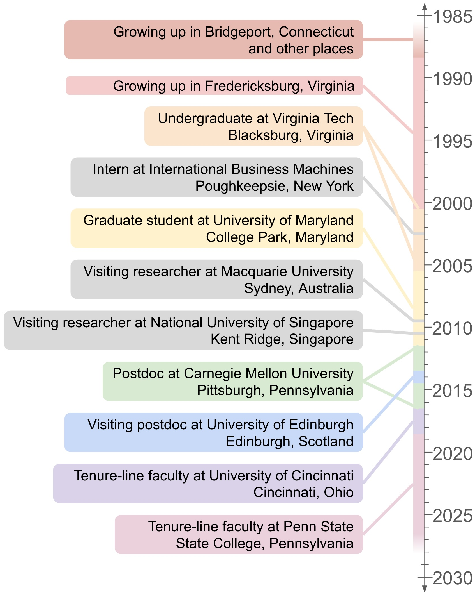

This page is part of my advice pages.

As of late spring 2026, I’ve visited 50 countries across six continents. I have lived on four continents—North America (USA), Australia, Asia (Singapore), and Europe (United Kingdom)—to the extent that I spent at least ten consecutive weeks calling each one home, during which I paid rent for a dwelling, bought groceries on a regular basis, and had a daily commute to work. I’ve flown roughly 398,000 miles and spent about 1,300 hours aboard planes.
I wanted to write about what travel means to me, and the best way to do it was through stories. These span my early childhood up to nearly the present day, when I am an associate professor at Penn State, a large research university in the mid-Atlantic USA. Many of my experiences with travel, especially beginning in graduate school, became possible through my work as an academic researcher and educator. Career positions at research universities are difficult to obtain, and I’m privileged to have one. It required a combination of hard work, persistence, luck, and at times, a willingness to travel long distances. My appreciation of travel grew alongside my career, and many of my stories fit into that decades-long trajectory.

Some people have traveled more than me by a measure, and I’ve met a few. Among them are a friend who flew 100 flight segments in one calendar year—twice as many as my personal record—and an acquaintance much younger than me who had visited more countries. Quantifying things allows us to compare them in specific ways, and quantity can suggest breadth of experience, but the value of experience comes from elsewhere. The obstacles to reaching my career goals and the obstacles to getting the travel experiences I wanted were often tied together, which encouraged me to take little for granted. I still experience wonder when I cross oceans or look at maps of the world. I’ve shared enthusiasm with people on their first plane flight or visiting their first foreign country. I encouraged the friend who had taken more flights in a year and the younger acquaintance who had visited more countries to write, too.
Except for the first chapter, the stories within each chapter appear in chronological order. I’ve written them partly from memory and partly using records such as calendars, notes to myself, social media posts, and miscellaneous items such as boarding passes and receipts. Any errors are mine.
Eight of my universities appear in these stories: Virginia Tech (where I attended college 2000–2005), the University of Maryland (where I attended graduate school 2005–2011), Macquarie University (where I was a visiting researcher for ten weeks in 2009), the National University of Singapore (where I was a visiting researcher for ten weeks in 2010), Carnegie Mellon University (where I had postdoctoral positions in 2011–2013 and again in 2014–2016), the University of Edinburgh (where I had a visiting postdoctoral position 2013–2014), the University of Cincinnati (where I first worked as tenure-line faculty 2016–2018) and the Pennsylvania State University (“Penn State”, where I have worked as tenure-line faculty since 2018). A few more universities appear in incidental roles. I share some thoughts on the internationalism of universities in the Afterword.
Students sometimes say that my stories inspire them, and they ask for advice toward gaining travel experiences that are personally and professionally meaningful. I was also trying to figure that out during many of the experiences I’ve described; note that some of them are about me trying to go places and not succeeding. Other things I’ve written contain my advice at length, but the concise version is to keep trying. Meaning, in the context of experience, is narrative: decisions and events can have value beyond what is immediately apparent, because we do not know the future. There are no guarantees, and sometimes the payoff can take a long time.